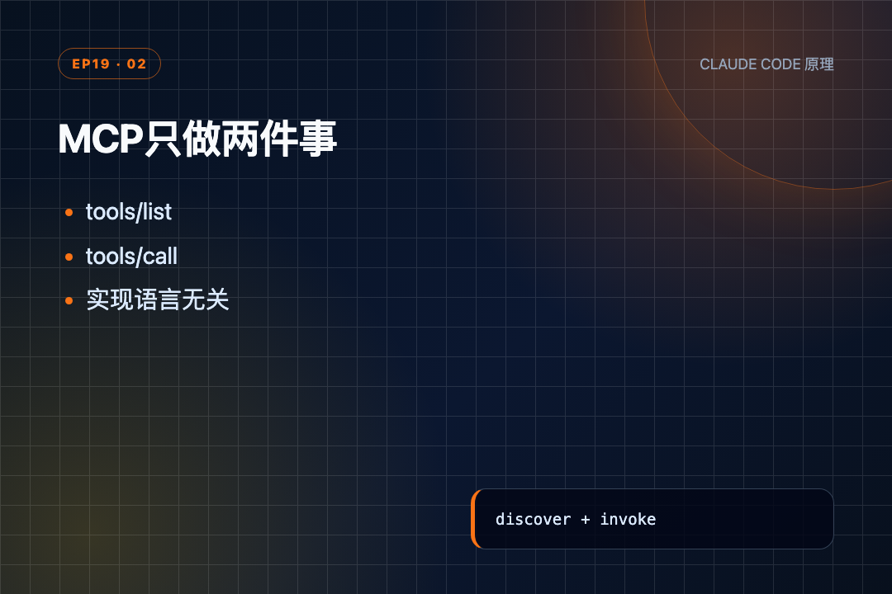
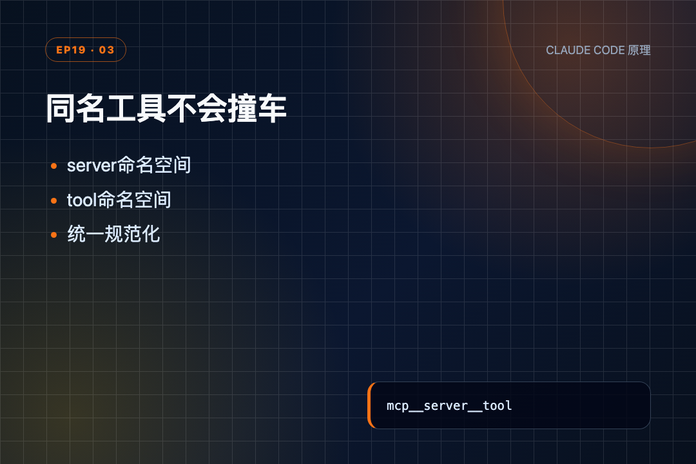
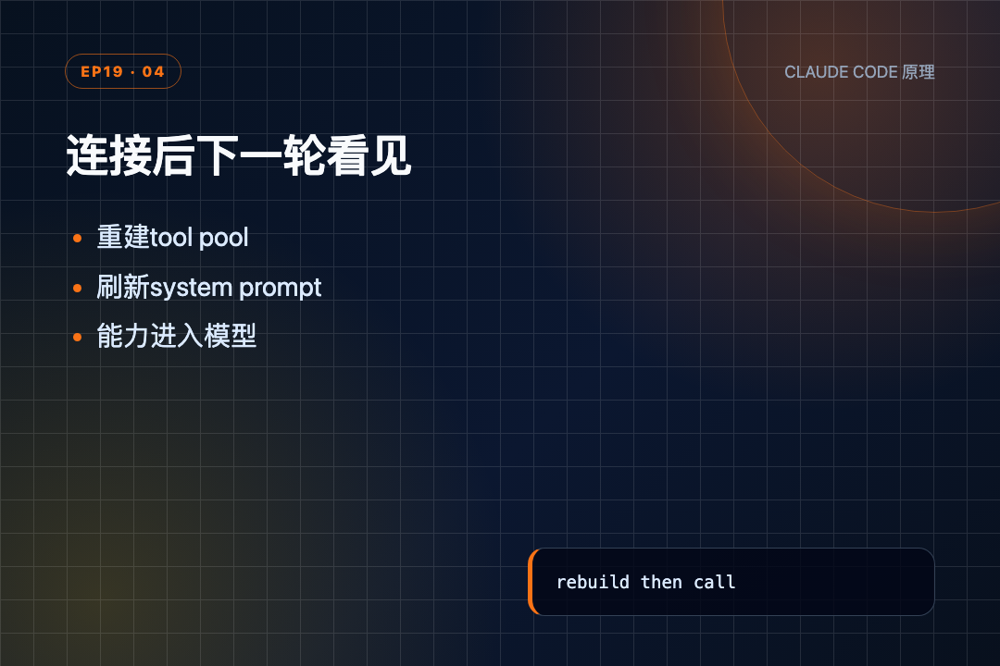
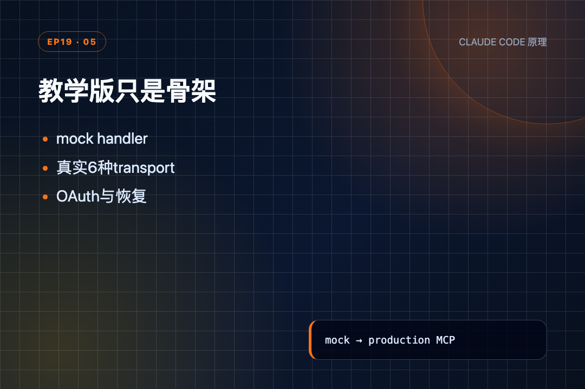

读完 s18，我脑子里还是两个 Agent 各自在 worktree 里改代码：目录隔开了，任务也能自己认领，协作这条线终于闭环。
可一翻到 s19，问题突然换了方向。Agent 想查 Jira、搜 Notion、触发公司部署，难道每接一个服务，都要在代码里手写一份工具定义、再补一个处理函数？接三个服务就要写三套？
我是郑同学。最近一路读到这里，才发现"会不会用工具"只是前半段，工具能不能用同一种方式接进来，才决定这套代码会不会越长越乱。
s19 给出的答案是 MCP。但在看代码之前，得先搞清楚 MCP 到底是什么。
● ● ●
大模型训练好之后，知识就固化了。它知道怎么写代码、怎么做推理，但它不知道你公司的 Jira 上有哪些 bug、不知道你的文档库里写了什么规范、不知道部署平台现在的状态。这些都是训练数据里没有的"外部信息"。
怎么办？给模型接"外挂"。
你可以把 MCP 理解成大模型的外挂装备接口。就像打游戏：
MCP（Model Context Protocol）就是这个标准接口。它把"接外部能力"这件事拆成两个角色：
┌──────────────────┐ ┌──────────────────┐ │ MCP 客户端 │ ← 连接协议 → │ MCP 服务端 │ │ (大模型/Agent这边) │ │ (外部信息源) │ │ │ │ │ │ "你有哪些能力？" │ ← 报清单 ──── │ "我能查Jira/搜文档"│ │ │ │ │ │ "帮我查一下 xxx" │ ── 调用 ────→ │ 去查 │ │ │ ← 返回结果 ─── │ "查到了3条记录" │ └──────────────────┘ └──────────────────┘
关键是：不管服务端用什么语言写的，客户端看到的都是统一的格式。这就是"协议"的含义——大家约定同一套"说法"，不用为每个服务单独写一套对接代码。
模型本身的知识不会变，但接上 MCP 后，它能查到的信息范围变大了。
● ● ●
真实 MCP 客户端和服务端是两个独立进程，通过 stdin/stdout 或网络通信。教学版为了聚焦核心逻辑，把它们放在同一个 Python 进程里模拟：
class MCPClient: """模拟 MCP 客户端：发现工具 + 调用工具""" def __init__(self, name: str): # 服务端名字，也作为命名空间前缀 self.name = name # 给模型看的工具 schema 列表（模拟服务端报上来的清单） self.tools: list[dict] = [] # 工具名 → 实际执行函数（模拟服务端执行工具的逻辑） self._handlers: dict[str, callable] = {} def register(self, tool_defs, handlers): # 模拟服务端返回 tools/list：一次写入两张表 self.tools = tool_defs self._handlers = handlers def call_tool(self, tool_name: str, args: dict) -> str: # 模拟 tools/call：按原始工具名查 handler handler = self._handlers.get(tool_name) if not handler: return f"MCP error: unknown tool '{tool_name}'" try: return handler(**args) except Exception as e: # 异常转成字符串，仍可作为 tool_result 回给模型 return f"MCP error: {e}"
两张表对应协议的两个核心动作：
tools 表 = 服务端告诉客户端"我有哪些工具"（真实协议叫 tools/list）_handlers 表 = 客户端调用时，服务端真正执行的函数（真实协议叫 tools/call）真实 MCP 要走 JSON-RPC 通信，教学版直接用 Python 函数调用代替。形状一样，但省掉了进程间通信的复杂度。
服务端长什么样？一个工厂函数模拟：
# docs 服务端：进程内模拟，不是独立进程 def _mock_server_docs(): client = MCPClient("docs") client.register( # 模拟 tools/list 返回的工具清单 tool_defs=[ {"name": "search", "description": "Search docs.", "inputSchema": {"type": "object", "properties": {"query": {"type": "string"}}, "required": ["query"]}}, {"name": "get_version", "description": "Get API version.", "inputSchema": {"type": "object", "properties": {}, "required": []}}, ], # 模拟 tools/call 执行 handlers={ "search": lambda query: f"[docs] Found 3 results for '{query}'", "get_version": lambda: "[docs] API v2.1.0", }) return client # 所有可用服务端的注册表 MOCK_SERVERS = { "docs": _mock_server_docs, "deploy": _mock_server_deploy, }
这就是一个"服务端"了。tool_defs 是它报上来的工具清单，handlers 是它收到调用后的执行逻辑。真实世界里这些可能跑在另一个进程甚至另一台机器上，但协议形状完全一样。

MCP只做两件事
● ● ●
connect_mcp模型一开始只能看到内置工具，其中多了一个 connect_mcp。真正的 MCP 工具还不存在于当前工具池里。
def connect_mcp(name: str) -> str: # 已连接过的 server 直接拒绝，防止重复覆盖 if name in mcp_clients: return f"MCP server '{name}' already connected" # 只接受预先登记的 mock server factory = MOCK_SERVERS.get(name) if not factory: # 找不到时把可用名字回给模型 available = ", ".join(MOCK_SERVERS.keys()) return f"Unknown server '{name}'. Available: {available}" # 工厂函数创建客户端，工具清单已在内部注册好 mcp_client = factory() # 关键：写入全局连接表，下一轮组装工具池才能看到 mcp_clients[name] = mcp_client # 收集刚发现的工具名 tool_names = [t["name"] for t in mcp_client.tools] print(f" \033[31m[mcp] connected: {name} → {tool_names}\033[0m") # 这段文本会作为 tool_result 回给模型 return (f"Connected to MCP server '{name}'. " f"Discovered {len(mcp_client.tools)} tools: {', '.join(tool_names)}")
这段有四个状态变化：
第一，防止重复连接。 name in mcp_clients 直接返回，第二次不会覆盖第一个客户端。
第二，只允许已登记的 mock server。 MOCK_SERVERS.get(name) 找不到时，函数把可用名字返回给模型，而不是抛异常让整个循环退出。
第三，工厂函数创建客户端。 factory() 执行后，mcp_client.tools 已经包含 server 暴露的工具定义。
第四，写入全局连接表。 mcp_clients[name] = mcp_client 是关键。连接状态先落进表里，后面的工具池组装才能看见它。
函数返回"发现了哪些工具"，只是给当前这次 connect_mcp 的 tool_result。新工具真正变得可调用，还要走下一步。
● ● ●
不同 server 都可能提供一个叫 search 的工具。直接把名字塞进字典，后来的会覆盖前面的。
s19 用命名空间解决：
# 匹配所有不在 [a-zA-Z0-9_-] 范围内的字符 _DISALLOWED_CHARS = re.compile(r'[^a-zA-Z0-9_-]') def normalize_mcp_name(name: str) -> str: """Replace non [a-zA-Z0-9_-] with underscore.""" # 把非法字符全部替换成下划线，比如 team.docs → team_docs return _DISALLOWED_CHARS.sub('_', name)
所有不在 [a-zA-Z0-9_-] 里的字符都替换成 _。比如 team.docs 会变成 team_docs。
接着读工具池组装：
def assemble_tool_pool() -> tuple[list[dict], dict]: """Assemble builtin tools + all MCP tools into one pool.""" # 先复制一份内置工具，避免直接改坏 BUILTIN_TOOLS tools = list(BUILTIN_TOOLS) handlers = dict(BUILTIN_HANDLERS) # 遍历所有已连接的 MCP 客户端 for server_name, mcp_client in mcp_clients.items(): # server 名先做字符清洗 safe_server = normalize_mcp_name(server_name) # 遍历该 server 暴露的每个工具 for tool_def in mcp_client.tools: # 工具名也做清洗 safe_tool = normalize_mcp_name(tool_def["name"]) # 拼成带命名空间的唯一名 prefixed = f"mcp__{safe_server}__{safe_tool}" # 给模型看的 schema：名字、描述、入参结构 tools.append({ "name": prefixed, "description": tool_def.get("description", ""), "input_schema": tool_def.get("inputSchema", {}), }) # 给 Python 执行时查的函数表：默认参数把客户端和原始工具名固定下来 handlers[prefixed] = ( lambda *, c=mcp_client, t=tool_def["name"], **kw: c.call_tool(t, kw)) # 返回两张表：模型 schema 列表 + 函数分发表 return tools, handlers
这段要同时看两张表：
tools 是传给模型的 schema 列表；handlers 是Python 执行时查的函数表。先复制内置表，避免改坏 BUILTIN_TOOLS 和 BUILTIN_HANDLERS。然后遍历所有已连接客户端，把每个工具改成 mcp__{server}__{tool}。
例如：
docs.search → mcp__docs__search deploy.status → mcp__deploy__status
前缀不只是为了好看，而是让"谁提供这个工具"进入工具名本身。 模型调用 mcp__docs__search 时，handler 才能准确路由回 docs 客户端的原始 search。

同名工具不会撞车
最容易漏的是这一行：
# 正确写法：默认参数在创建 lambda 那一刻就锁定了客户端和原始工具名 lambda *, c=mcp_client, t=tool_def["name"], **kw: c.call_tool(t, kw)
如果写成下面这样：
# 错误写法：闭包延迟查找，循环结束后所有 handler 都会指向最后一个工具 lambda **kw: mcp_client.call_tool(tool_def["name"], kw)
Python 的闭包会在真正调用时再查 mcp_client 和 tool_def。循环早已跑到最后一个工具，多个 handler 很可能都指向最后一项。
用默认参数 c=...、t=...，等于在创建 lambda 的那一刻把客户端和原始工具名固定下来。这是普通的 Python 闭包细节，却直接决定动态分发会不会串线。
● ● ●
agent_loop() 启动时先组装一次工具池：
def agent_loop(messages: list, context: dict): # 启动时先组装一次工具池，此时还只有内置工具 tools, handlers = assemble_tool_pool() system = assemble_system_prompt(context) while True: # 发起一次 LLM 调用，工具列表在这一刻已经固定 response = client.messages.create( model=MODEL, system=system, messages=messages, tools=tools, max_tokens=8000) messages.append({"role": "assistant", "content": response.content}) # 不需要工具就结束本轮 if response.stop_reason != "tool_use": return # 收集所有工具调用的结果 results = [] for block in response.content: # 跳过非工具调用的内容块 if block.type != "tool_use": continue # 终端打印将要执行的工具名 print(f"\033[36m> {block.name}\033[0m") handler = handlers.get(block.name) # 查表执行，找不到给 "Unknown" output = handler(**block.input) if handler else "Unknown" # 包装成 tool_result 结构 results.append({"type": "tool_result", "tool_use_id": block.id, "content": output}) # 结果以 user 角色回灌给模型 messages.append({"role": "user", "content": results}) # 关键：本轮调用了 connect_mcp，就在下一次 LLM 调用前刷新工具池 if any(b.name == "connect_mcp" for b in response.content if b.type == "tool_use"): # 重新组装，新 MCP 工具才会出现 tools, handlers = assemble_tool_pool() context = update_context(context, messages) system = assemble_system_prompt(context)
当前 LLM 请求发出时，tools 已经固定。模型在这一次响应里调用 connect_mcp("docs") 后，Python 虽然连接成功了，但模型不可能倒回去修改刚才收到的工具列表。
所以循环先给这次 tool_use 配上 tool_result，再检查响应里有没有 connect_mcp：
tools 和 handlers；while True，发起下一次 LLM 请求。连接发生在这一轮，新工具出现在下一轮。 这不是延迟，而是工具列表只能在两次模型调用之间更新。

连接后下一轮看见
● ● ●
四块代码按真实执行顺序连起来，是这样：
第 1 次 LLM 调用
tools = 18 个内置工具
模型只能看到 connect_mcp，看不到 docs.search
↓
模型返回 tool_use: connect_mcp(name="docs")
↓
connect_mcp
MOCK_SERVERS["docs"]() 创建 MCPClient
mcp_clients["docs"] = client
返回发现 search / get_version
↓
本轮追加 connect_mcp 的 tool_result
↓
assemble_tool_pool
复制 18 个内置工具
读取 mcp_clients["docs"].tools
新增 mcp__docs__search
新增 mcp__docs__get_version
↓
第 2 次 LLM 调用
tools = 20
模型现在可以发出 mcp__docs__search
↓
动态 handler
prefixed name → docs client → 原始 search handler
↓
search 输出成为 tool_result，再回到 messages
第一块 connect_mcp 改连接表；第二块 assemble_tool_pool 把连接表翻译成模型 schema 和 Python handler；第三块循环在两次 LLM 调用之间刷新；第四块动态 handler 把调用送回原 server。
MCP 没有另起一套工具循环。 它只是把外部工具接进 s01 就存在的"模型提出调用 → Python 执行 → 结果回给模型"这条路。
● ● ●
光看代码没感觉，跑一下。
先看连接前有多少工具：
s19 >> Connect docs MCP and search agent loop tool count before: 18
连接前只有 18 个内置工具，mcp_clients 是空字典。
连接 docs 服务：
[mcp] connected: docs → ['search', 'get_version'] Connected to MCP server 'docs'. Discovered 2 tools: search, get_version
docs 服务提供了两个工具：search 和 get_version。现在 mcp_clients 从空变成了 {docs: client}。
再看工具池：
dynamic tools: ['mcp__docs__search', 'mcp__docs__get_version'] tool count after: 20
从 18 变成 20，正好多了 docs 的两个工具。注意名字不是 search，而是 mcp__docs__search——加了服务名前缀，防止两个服务都有 search 时撞车。
试着用新工具搜一下：
> mcp__docs__search [docs] Found 3 results for 'agent loop'
不只是 schema 里多了一项，handler 也真的能调到。前缀工具名一路还原到 docs 客户端的原始 search。
如果重复连接同一个服务？
second connect: MCP server 'docs' already connected
直接返回，工具池不会变成 22。连接前先检查 name in mcp_clients，重复连接被挡在改状态之前。
一句话：连接一个 MCP 服务，工具池就多几个；名字加前缀防撞车，handler 同步注册可调用。
● ● ●
README 的"深入 CC 源码"给了具体文件和函数。按同一维度对照，会更容易看出哪些是共同骨架，哪些是生产实现才有的部分。
assembleToolPool() 为什么不把所有工具一起排序真实 CC 的 tools.ts:345-364 大致是：
return uniqBy( [...builtInTools.sort(byName), ...filteredMcpTools.sort(byName)], 'name', )
内置工具和 MCP 工具分开排序，内置放前面。名字撞车时，uniqBy 优先保留内置工具。
README 还指出，最后一个内置工具附近关系到系统 prompt 的缓存断点。把两类工具混在一起排序，会让 MCP 工具的增减扰动静态前缀，降低缓存命中。
教学版为了讲清动态组装，直接去掉了 prompt cache；真实 CC 则保留缓存边界，同时允许 MCP 工具变化。
教学版只有一个方向：
Agent → MCP server → result
真实 CC 的 channelNotification.ts 还支持反向通知：server 声明 claude/channel 能力后，可以发 notifications/claude/channel。消息被包装成
这和 s13、s14 的思路连上了：外部事件最终也要变成一条 Agent 下一轮能看到的消息。

教学版只是骨架
● ● ●
第一，mock MCP 不是真实协议通信。
s19 没有 JSON-RPC、没有子进程、没有 stdin/stdout，也没有 HTTP/SSE/WebSocket。 _mock_server_docs() 和 Agent 在同一个 Python 进程里，call_tool() 最终只是普通函数调用。
第二，权限注解只是文字。
(readOnly) 和 (destructive) 放在 description 里，模型可以读到，但代码没有根据它做权限判定。真实 CC 才会读取结构化 annotations。
第三，MCP 工具只给 Lead。
教学版 Teammate 仍使用固定 8 个工具。真实 CC 的子 Agent 可以继承父级 MCP 配置，这一层在 s19 被省略。
第四，名称清洗不等于绝对无冲突。
team.docs 和 team/docs 都会被清成 team_docs。教学版没有额外检测这种"清洗后同名"，只是靠 server/tool 前缀降低常见冲突。
第五，连接状态只在内存。
mcp_clients 是全局字典。进程退出后连接消失；没有配置持久化、健康检查、断线重连和凭据刷新。
这些缺口不是 bug 列表，而是教学范围。s19 要讲清的是"发现后并入原工具循环"，不是复刻完整 MCP SDK。
● ● ●
读完 s19，我更容易把 MCP 理解成一条接入链，而不是一个神秘插件：
MCPClient.register() 保存工具清单和调用入口；connect_mcp() 创建客户端并写入 mcp_clients；normalize_mcp_name() 把名字清洗成安全字符；assemble_tool_pool() 同时生成模型 schema 和 Python handler；agent_loop() 在连接后的下一轮刷新工具池；mcp__server__tool 路由回原始 server 工具。最值得记住的是：外部工具接进来以后，仍走同一条 tool_use → tool_result 反馈链。
感兴趣可以 clone 源码，分别连接 docs 和 deploy，再观察工具数、前缀名以及第二次连接的返回值。
● ● ●
s19 把最后一块外部能力接进来了。但前 19 章一直是"一章看一个零件"：权限、Hook、记忆、压缩、后台、cron、团队、worktree、MCP，各自单独看都清楚。
真正难的是把它们装回同一个系统：哪些动作发生在 LLM 前，哪些包在工具外面，后台和定时事件又从哪里回到 messages？
下一节 s20 不再新增零件，而是做总装——机制很多，循环仍然是那一个反馈循环。
源码地址：https://github.com/shareAI-lab/learn-claude-code